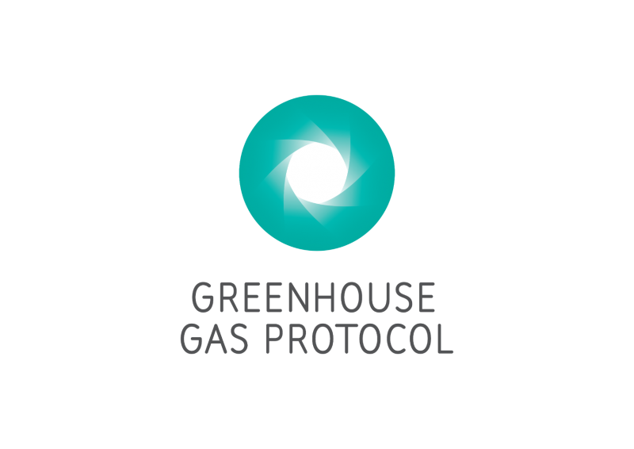

Berechnung der CO2-Bilanz für Unternehmen
Die CO₂-Bilanz eines Unternehmens, auch als Corporate Carbon Footprint bezeichnet, erfasst die gesamten direkten und indirekten Treibhausgasemissionen entlang der gesamten Wertschöpfungskette. Sie dient dazu, die Hauptquellen der Emissionen zu identifizieren und gezielte Reduktionsmaßnahmen zu entwickeln und bildet die Grundlage jeder Klimastrategie.
Warum ist eine CO2-Bilanz wichtig?
Unternehmen benötigen eine CO₂-Bilanz hauptsächlich aus zwei Gründen:1
- 1. Erfassung und Überwachung von Umweltauswirkungen: Die CO2-Bilanz ermöglicht es, de eigenen ökologischen Fußabdruck des Unternehmens genau zu quantifizieren und Maßnahmen zur Reduktion von Treibhausgasemissionen zu entwickeln.
- 2. Erfüllung regulatorischer und marktwirtschaftlicher Anforderungen: Kunden, Investoren und Behörden legen zunehmend Wert auf Nachhaltigkeit und Transparenz. Eine CO₂-Bilanz erleichtert es Unternehmen, diesen Anforderungen gerecht zu werden.
Methoden und Standards zur Berechnung
Der erste Schritt bei der Erstellung einer CO₂-Bilanz besteht darin, eine geeignete Methodik und einen anerkannten Standard festzulegen.
 3Das Greenhouse Gas Protocol
Das Greenhouse Gas Protocol (GHG Protocol)2 ist der weltweit am häufigsten verwendete Standard für die Berechnung von CO₂-Bilanzen. Es wurde 2001 vom World Resources Institute und dem World Business Council for Sustainable Development entwickelt. Das GHG Protocol unterteilt CO₂-Emissionen in drei Hauptkategorien, bekannt als "Scopes":1
- Scope 1: Umfasst direkte CO₂-Emissionen aus Quellen, die unter der direkten Kontrolle des Unternehmens stehen, wie firmeneigene Fahrzeuge, Gebäude und Anlagen
- Scope 2: Beinhaltet indirekte CO₂-Emissionen, die durch den Verbrauch von eingekaufter Energie wie Strom, Dampf, Wärme und Kälte entstehen.
- Scope 3: Deckt alle anderen indirekten CO₂-Emissionen ab, die entlang der Wertschöpfungskette auftreten, einschließlich der Herstellung und des Transports eingekaufter Güter, der Nutzung der eigenen Produkte durch Kunden und der Entsorgung von Abfällen.
ISO 14064
Ein weiterer international anerkannter Standard im Bereich Umweltmanagement ist die ISO 14064. Sie ergänzt das GHG-Protocol durch detailiertere Anforderungen für die CO2-Bilanzierung.
Die Bedeutung der Scope-3-Emissionen
Die Erfassung der Scope-3-Emissionen ist für eine aussagekräftige CO₂-Bilanz unerlässlich, da diese je nach Branche über 90% der gesamten CO₂-Emissionen eines Unternehmens ausmachen können. Allerdings kann die Berechnung der Scope-3-Emissionen oft komplex und herausfordernd sein.1
Erstellung einer CO2-Bilanz
Die Berechnung einer CO₂-Bilanz erfolgt in mehreren Schritten:
- 1. Datenerhebung: Erfassung aller relevanten Emissionsquellen.
- 2. Kategorisierung nach Scopes: Einordnung der Emissionen nach GHG Protocol oder ISO 14064.
- 3. Berechnung mit anerkannten Methoden: Nutzung von CO₂-Umrechnungsfaktoren und Berechnungstools.
- 4. Analyse und Berichterstattung: Dokumentation und Bewertung der Ergebnisse.
Die Erstellung einer CO₂-Bilanz ist ein wichtiger Schritt, um den eigenen ökologischen Fußabdruck zu analysieren und Maßnahmen zur Reduzierung von Treibhausgasemissionen zu identifizieren. Eine detaillierte CO₂-Bilanz ermöglicht es Unternehmen, ihre direkten und indirekten Emissionen zu erfassen und zu quantifizieren. Sie bildet die Grundlage für jede Klimastrategie.1
Die Erstellung einer CO₂-Bilanz ist ein kontinuierlicher Prozess, der regelmäßige Aktualisierungen und Überprüfungen erfordert, um die Fortschritte bei der Emissionsreduktion zu messen und sicherzustellen, dass die festgelegten Klimaziele erreicht werden.1
Quellen
1https://www.carbon-connect.ch/resources/leitfaden-berechnung-co2-bilanz-unternehmen#unternehmen
2https://ghgprotocol.org/
3Bild entnommen von https://ghgprotocol.lambdastore.net/policy-and-action-standard.html
4Bild entnommen von https://plana.earth/de/academy/iso-14064